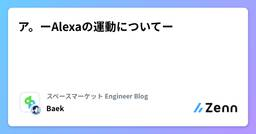

スペースマーケット Engineer Blogのフィード
https://zenn.dev/p/spacemarket
スペースを簡単に貸し借りできるサービス「スペースマーケット」のエンジニアによる公式ブログです。 弊社採用技術スタックはこちら -> https://www.whatweuse.dev/company/spacemarket
フィード

localhostをiPhoneで確認する方法
スペースマーケット Engineer Blogのフィード
こんにちは、スペースマーケットのWebエンジニアのShotaです。今回はlocalhostをiPhoneなど別のデバイスで確認する方法をご紹介します。 方法以下の手順で開発中のPCのローカルサーバー(今回はポート3000番)に別のデバイスからアクセスします。ローカルサーバーが起動しているか確認するhttp://localhost:3000/を開発中のPCで開けることを確認します。開けない場合はローカルサーバーを起動しましょう。Next.jsを使用している場合のコマンドnext dev -H 0.0.0.0Macのターミナルで以下を入力ipconfig get...
1日前

ア。ーAlexaの運動についてー 1
1
スペースマーケット Engineer Blogのフィード
はじめにどうもー。スペースマーケットの異端審問官、ソヴァクです。最近Alexaを買いまして、これがとても良くて、もう私の家はアレクサを中心に回っています。https://www.amazon.co.jp/dp/B09B2RLPLV?ref=MARS_NAV_desktop_hyp&th=1家を中心にAlexaが回っているのではないので、異端思想には気をつけてくださいねーもうすっかり夏ですねー☀️夏になると何が1番困るかわかります？....答えは暑さです結局そういうシンプルなのが1番困るらしいですよそんな夏でもすぐに部屋を涼しくできるように、今回はAlex...
5日前

Conventional Comments それは コードレビューがみた光
スペースマーケット Engineer Blogのフィード
おはようございます、こんにちは、こんばんは。スペースマーケットでWebエンジニアをしているs0arです。Switch2抽選落ちました。意外と周りに当たってる人がいてびっくりしてます。あんなもん普通の人間に当たるわけがないんだよなあ？当たった人は任天堂に何を差し出したんですか？ あなたはコードレビューが好きですか？あーしはけっこうすきかも〜（ギャル真似クソジジイ）他の人が書いたコードから「こういうのもあるのか」っていう勉強になったりするし読めば読むほどどんどん知識と経験値が蓄積されていくので大チャンスだと思っています。だからどんどんやっていきたいしみんなもやろうぜ！コ...
15日前
【Day.js】React+Day.jsで簡単にカレンダーコンポーネントができた話（Day.jsの基本メソッドの紹介もあるよ）
スペースマーケット Engineer Blogのフィード
こんにちは！スペースマーケットでフロントエンドエンジニアをしているwharaguchiです。今回は、Day.jsを使ってカレンダーコンポーネントを作成したところ、とても簡単に作ることができたので、そちらを紹介したいと思います。 今回のゴール今回のゴールは以下の仕様を満たしたカレンダーコンポーネントです。前月・次月の移動ができる表示している月に応じてカレンダーの表示内容を変更する日曜日始まりのカレンダーを作成し、不足している情報を前月、次月から補完する実際のコードと画面も用意しているので、そちらも併せてご確認ください。https://github.com/wh262...
15日前
レンタルスペース x SwitchBot = ∞の可能性
スペースマーケット Engineer Blogのフィード
はじめにスペースマーケットのエチケットリーダーseoと申します。普段はAndroidやFlutterを中心に開発していますが、最近はかねてより興味のあったバックエンド開発にも挑戦しています。30歳を過ぎてからの異業種へのチャレンジは一般的にハードルが高いとされていますが、そうした挑戦を応援してくれるスペースマーケットの環境には、感謝カンゲキ雨嵐な毎日です！ レンタルスペース運営始めました昨年11月に社内制度を活用してレンタルスペース運営を始めてみました。こちらがオープンしたレンタルスペースです。下記リンクから予約すると今なら10%オフで利用できますのでぜひご利用し...
17日前
AWS WAFでメンテナンスページを実装してみた
スペースマーケット Engineer Blogのフィード
はじめにこんにちは。スペースマーケットでWebエンジニアしてます、dumbled0reです。去年の4月に新卒で入社したばかりですが、気づけば1年があっという間に過ぎて2年目になりました。時間の流れは早いですね。今回はサービスのメンテナンスページをAWS WAFを使用して実装したので、紹介したいと思います！ メンテナンス画面スペースマーケットでメンテナンス中に表示される画面です。 背景データベースのアップグレード作業に伴い、サービス全体を一時的に停止する必要がありました。ユーザーにはアクセス制限をかけつつ、開発者は内部確認ができる状態を目指しました。ALB（Ap...
18日前
ドメイン駆動設計入門（DDD）を読んでみて
スペースマーケット Engineer Blogのフィード
はじめにこんにちは。スペースマーケットでWebエンジニアしてるmotimoti63です。最近、バックエンドのプロジェクトでDDD（ドメイン駆動設計）の思想に基づいたアーキテクチャを採用しているレポジトリを触る機会がありました。実際にコードを書いていく中で「これ、どういう意図で設計されてるんだろう？」と戸惑うことが多々ありました。「まずはDDDって何？」というところからしっかり理解したいと思い、初心者にもわかりやすい本を見つけたので、それを参考にしながら学習を進めてみました。今回はその内容を、自分なりにかみ砕いてまとめた記事になります。まだまだ理解が浅い部分もあるかもしれません...
18日前
NestJSとDataLoaderでGraphQLのN+1問題を解決する
スペースマーケット Engineer Blogのフィード
はじめにGraphQLを使うと柔軟なAPIを構築できますが、適切に実装しないとパフォーマンスの問題に直面することがあります。特に有名なのが「N+1問題」です。この記事では、NestJSとDataLoaderを使ってこの問題をエレガントに解決する方法を解説します。 N+1問題とは？N+1問題は以下のような状況で発生します：親エンティティのリストを取得する（1回のクエリ）そのリスト内の各エンティティについて、関連するデータを個別に取得する（N回のクエリ）例えば、10人のユーザーを取得し、各ユーザーの国情報を取得する場合、データベースへのクエリが合計11回発行されてしまい...
1ヶ月前
VitestとJestの共存から始める、無理のないVitest移行
スペースマーケット Engineer Blogのフィード
こんにちは。スペースマーケットでエンジニアをしている8zkです。 なぜJestからVitestに移行するのか？突然ですがJestの実行時間が長いと感じたことはありませんか？私はあります。そこでとても速いと噂のVitestに移行しようと思い立ちました。Vitestを選ぶ理由は大きく2つですテストの実行が速いJest互換のAPIが豊富で学習コストが低いとはいえ、隙間時間にVitest移行を進めようと思った私にはいきなりすべてのテストをVitestに置き換えるのはちょっと重荷です。まずは1ファイル移行してみて徐々にVitestに移行していきたいと考え、Jestは残したま...
1ヶ月前
PRエビデンス作成時に便利なChrome拡張機能をFlutterで実装してみた
スペースマーケット Engineer Blogのフィード
こんにちは、スペースマーケットでモバイルエンジニアをしている村田です。今回、普段開発で触っているFlutterでChromeの拡張機能を作ってみたので、その内容を本記事でご紹介します！ 作成物タイトルの通り、PR作成時に便利な以下の2つの機能を備えたツールを作成しましたMarkdown形式の画像記法  をHTMLの <img>タグ に変換最大4x3のMarkdownテーブル生成 背景PRのエビデンスを作成する際に愛用していた、ImgConverterが利用不可になってしまい、作業効率が落ちてしまいました。代替サービスも見当たらな...
1ヶ月前
エンジニア向けMeetup・勉強会の場として、スペースマーケット オフィス ラウンジを無料開放します
スペースマーケット Engineer Blogのフィード
こんにちわ。スペースマーケットのVPoE 成原です。という訳でタイトル通りの話ですが、弊社スペースマーケットはオフィスにあるラウンジをエンジニア向けMeetup・勉強会の場として無料開放します。各種Meetupやもくもく会など、エンジニアリングに関わるテーマならば大歓迎ですので、気軽にご連絡ください。 会場設備について以下が無料開放するラウンジとなります。https://www.spacemarket.com/spaces/bo7sigsoksgb7het/各種情報詳細は上記ページをご覧いただければと思いますが、基本情報・主な設備などは以下です。 基本情報住所...
1ヶ月前
なん（NaN）でSafariクラッシュするの？👀
スペースマーケット Engineer Blogのフィード
こんにちは、株式会社スペースマーケットでWebエンジニアをしております。wado63です。SNSのWebviewでLPのフォーム入力中にクラッシュするというバグを踏みまして調査したところ、SafariにおいてCSSのcalcでNaNがあるとクラッシュするという結果に辿り着きましたので共有したいと思います。何でクラッシュするの？？って沼っていましたら、NaNが原因でした😇 バグの発見ある日、SNSのWebview内のLPでフォーム入力中でクラッシュしてリロードしてしまう報告が社内からありました。ユーザーが興味を持って問い合わせの入力してくれているというのに、その途中でリロードが...
1ヶ月前
RancherからPodmanへの乗り換えが簡単すぎてネタにすらならなかったけどそれでも俺はブログを書くことを諦めない
スペースマーケット Engineer Blogのフィード
最近のラノベのタイトル、長いおはようございます、こんにちは、こんばんは。スペースマーケットでWebエンジニアをしているs0arです。業務でDev Containerを使用して開発していて、これまではRancher Desktopを使っていました。それを興味本位でPodman Desktopに移行したのでそのメモです。とはいえおもろいことは一切起こりませんでした。「やったか…！？（やってない）」ってなりませんでした。 前提筆者はmacOSを使っています。おそらく他のOSも大差ないとは思います。たぶん。きっと。 Rancher Desktopをアンインストールする（ア...
1ヶ月前
[2024年] スペースマーケットエンジニアに聞いた、おすすめ本（10+7冊）を紹介するよ！後編
スペースマーケット Engineer Blogのフィード
みなさんこんにちは 🌞今回は前回に続く【後編】ということで、で紹介しきれなかった書籍の中から珠玉の7冊を紹介します。 前編のおさらいエンジニア組織に所属するメンバーおよびマネージャー全員で、2024年に読んだ本の中からジャンルを問わず 良かったと思った本 を自由に挙げてもらいました。技術書・ビジネス書・小説・漫画など多岐にわたる36冊が集まり、同率1位には「世界一流エンジニアの思考法」と「システム設計の面接試験」が輝きました 👑前編はこちらですのでよければご覧ください。https://zenn.dev/spacemarket/articles/767583cbe23e1b...
1ヶ月前
『SCRUM BOOT CAMP THE BOOK』から学んだスクラム開発の実践知
スペースマーケット Engineer Blogのフィード
こんにちは！最近、アジャイル開発手法の代表的な書籍である『SCRUM BOOT CAMP THE BOOK スクラムチームではじめるアジャイル開発』を読みました。この記事では、本書から得た主要な学びと、実際のプロジェクトでどのように活かせるかについて共有します。 主要な学び 1. スクラムの基本フレームワーク本書では、スクラムの基本的な枠組みが分かりやすく説明されています：スプリント：1〜4週間の期間で区切り、その期間内に動くプロダクトを作り上げるデイリースクラム：15分程度の短いミーティングで、チームの進捗を共有するスプリントレビュー：スプリントの成果をステーク...
1ヶ月前
AWS Database Migration Service（DMS）を使ってデータ移行をしてみた
スペースマーケット Engineer Blogのフィード
こんにちは！以前あるDBを特定のDBに統合する作業を行った際に、AWS Database Migration Service（DMS）を初めて使ってデータ移行をしてみたので、DMSを使ったデータ移行の流れや、感想をまとめていきたいと思います！今回統合したDBの環境構成です。役割データベースエンジンバージョン元となるDBMySQL Community Edition5.7.44統合先のDBAmazon Aurora MySQL5.7 なぜDMSを選んだのかDMSを選んだ主な理由は、レプリケーション機能が使えるからです！https://d...
1ヶ月前
入社1ヶ月！新卒エンジニアの奮闘記
スペースマーケット Engineer Blogのフィード
こんにちは！アプリエンジニアの細田です😊 入社して1ヶ月が経ったので、この間に感じたことや学んだことを振り返ってみようと思います。書き殴り日記的な感じですが、振り返りって大事ですよね～。 自分を知る旅まず痛感したのは、自分のことをちゃんと理解することの重要性。良いところは伸ばして、イマイチなところは直していく。一番ヤバいのは、自分の弱点に気づいてないパターン。会社の皆さんめっちゃ優しいので、ズバッと指摘してくれないんですよね（笑）自分で気づくか、言ってくれる先輩に出会うか...私の場合は後者でラッキーでした。「こうしたら？」って提案という形で助言くれる先輩がいて、マジで感謝です...
1ヶ月前
Elasticsearchのmatchクエリ(全文検索)のスコアを手計算してみた
スペースマーケット Engineer Blogのフィード
こんにちは！スペースマーケットのエンジニアrokioです😼少し前にElasticsearchハンズオン記事を書いたのですが、そこでmatchクエリを使った検索をしたときのスコアがどのように計算されるのか気になっていました🤔ハンズオン記事はこちら：https://zenn.dev/spacemarket/articles/5ee1c257ef4090今回はElasticsearchの全文検索で用いられる数式を調べ、例題をつくりスコアを手計算することで、matchクエリが、与えられた文に対して何をもって「近い」とするのかを考えることにします！ セットアップ仕事では日本語...
2ヶ月前
[Testing Library] getBy, queryBy, findByの違いと使い方
スペースマーケット Engineer Blogのフィード
こんにちは、スペースマーケットのWebエンジニアのShotaです。今回はTesting LibraryのgetBy, queryBy, findByの使い方を挙動とユースケースに分けてご紹介します。コンポーネントのテストを書く時に参考にしてみてください。 getBy, getAllBy要素の取得に使う基本的なメソッドです。指定した条件に一致する要素を取得したいときに使用します。一致する要素がある場合一致する要素が複数見つかった場合一致する要素がない場合getBy一致する要素を返すエラーを返すエラーを返すgetAllBy一致するすべての要素...
2ヶ月前
[2024年] スペースマーケットエンジニアに聞いた、おすすめ本（10冊）を紹介するよ！
スペースマーケット Engineer Blogのフィード
ITエンジニア本大賞2025の大賞が発表されましたね！スペースマーケットのエンジニアが普段どんな本を読んでいるのか気になったこともあり、勝手に『第1回スペースマーケットエンジニアおすすめ本大賞』を開催することにしました 🎉🎉🎉（本当はITエンジニア本大賞と同時期に公開したかったのですが、なんやかんやでもう3月になってしまいました… 🫠）対象はエンジニア組織に所属するメンバーおよびマネージャー全員で、2024年に読んだ本の中から技術書・ビジネス書・小説・漫画などジャンルを問わず 良かったと思った本 を自由に挙げてもらいました。今回はその結果から大賞を決定し、さらに独断でピックアップ...
2ヶ月前